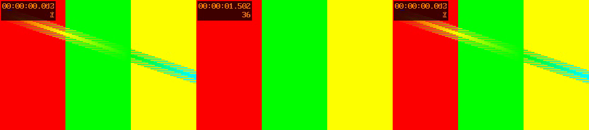
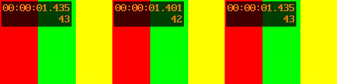
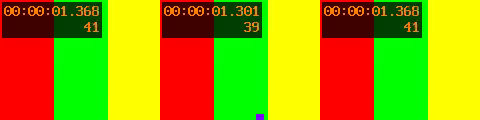

Issue #173: AVI seeks land on the wrong frame
Outcome: fixed. Seeking an AVI to frame N decoded a different picture in the preview, the app's Original frame, trimmed encodes and the detectors. There were three faults, and two of them reach well beyond the MPEG-2 file this started from:
- A rounding tie on every NTSC-rate AVI (HuffYUV, DV, intra MPEG-4, B-frames or not): 1 start frame in 3 was a frame early.
- A decoder delay in AVIs holding MPEG-2, MPEG-4 ASP or H.264 B-frames: every seek was 1 frame early (2 for H.264).
- No seek at all near the start of those same files: frame 1 decoded as frame 45 (H.264: 60). The H.264 AVI's untrimmed encode was wrong as well, with frame 0 three times and the last two frames lost.
After the fix, every start frame of every AVI tried lands on its picture. Untrimmed encodes of the other fixtures are byte-identical (framemd5). Not fixed: on such an AVI, a trim whose in-point is under 0.13 s still loses about 1.3 s of sound (§6, follow-up task).
1. How it was measured
Every start frame (1 to ~86) of each source was decoded the way the worker's seeking decoder does: an input -ss,
setpts=PTS-STARTPTS, three frames. Each picture is named by its index in an independent sequential decode
(-fps_mode passthrough, MD5 of the luma plane), the same numbering as select=eq(n,N).
scripts/sweep.py does this; scripts/make_avi_variants.py builds the variants from
testsrc2, where every frame differs.
Limits: synthetic content, short files (90–100 frames), one machine (macOS arm64) and one FFmpeg (9.0). The reference numbering is the app's numbering for these fixtures. It is not for soft telecine or AVI null frames (task #16), and those were left out.
2. The mechanism
From scripts/timestamps.py on hard_telecine_test.avi (MPEG-2, time base 1001/30000):
| Packet (decode order) | DTS | PTS |
|---|---|---|
| I | 0 | N/A |
| P | 1 | N/A |
| B | 2 | 2 |
| B | 3 | 3 |
| P | 4 | N/A |
AVI stores only decode timestamps. The B packet at decode index 2 is shown at display index 1, so its "PTS" is display + 1. The decoded frames carry best-effort timestamps 1, 2, 3 … for display pictures 0, 1, 2 …: the I picture comes out when packet 1 (DTS 1) is decoded. That is fault 2: the decoder delay D (here 1) is added to every picture's time.
Fault 1 sits on top of it. One tick is one frame, so the seek point (N − 0.5)/fps is exactly half a tick. ffmpeg
reads -ss to the microsecond and rounds the trim start to the nearest tick:
| Frame | -ss (%.6f) | In ticks | First kept (-copyts) |
|---|---|---|---|
| 10 | 0.316983 | 9.499990 | stamp 9 (display 8) |
| 41 | 1.351350 | 40.500000 | stamp 41 (display 40: only the delay) |
| 43 | 1.418083 | 42.499990 | stamp 42 (display 41) |
Whenever the six decimals fall below the half, the start rounds down a whole frame. This happens on 2 starts in 3 at 30000/1001 and never at 25 fps, whose decimals are exact. It doesn't need B-frames.
Fault 3: the seek to frame 1 (-ss 0.016683) logs
could not seek to position 0.017 and the first frame kept is stamp 46 (display 45). fftools/ffmpeg_demux.c
moves a seek 3*AV_TIME_BASE/23 (0.13 s) earlier whenever a stream has a decoder delay and the format can't seek by PTS. Below
0.13 s that is negative, the AVI index has no entry for it, and decoding resumes wherever probing left the demuxer.
3. Results: every start frame
scripts/sweep.py. Wrong start frames, by rule. old is the worker before this fix. delay adds the
measured decoder delay. ceil also rounds the seek up to the microsecond. fix also counts from the start below 0.5 s, which is
exactly what the worker now does.
| Source | Time base | Delay | old | delay | ceil | fix |
|---|---|---|---|---|---|---|
hard_telecine_test.avi (MPEG-2) | 1001/30000 | 1 | 86/86 | 30 | 2 (1, 2 → 45) | 0 |
avi_h264_bframes.avi (H.264) | 1001/30000 | 2 | 86/86 | 30 | 1 (1 → 60) | 0 |
| MPEG-4 ASP, B-frames (variant) | 1001/30000 | 1 | 86/86 | 30 | 2 | 0 |
| MPEG-2 PAL, B-frames (variant) | 1/25 | 1 | 89/89 | 2 | 2 | 0 |
avi_ntsc_intra.avi (MPEG-4, no B) | 1001/30000 | 0 | 29/86 | 29 | 0 | 0 |
| HuffYUV NTSC (variant) | 1001/30000 | 0 | 29/86 | 29 | 0 | 0 |
| DV NTSC (variant) | 1001/30000 | 0 | 29/86 | 29 | 0 | 0 |
small_clip.mp4, seek_timebase_2997.mov, face_restore_test.mp4, H.264 B-frame MKV, FFV1 MKV | various | 0 | 0 | 0 | 0 | 0 |
The delay column's 30 failures are the tie again. Adding exactly one tick moves the seek point to N + 0.5 ticks, which ties the same way.
4. Results: the worker itself, before and after
scripts/worker_probe.py runs the real worker (every pass off, FFV1 output) built from the commit before the fix and after it. Each delivered
picture is named by its index in the sequential decode.
| Source | Path | Before | After |
|---|---|---|---|
hard_telecine_test.avi | preview 10 / 41 / 43 / 77 | 9 / 40 / 42 / 76 | 10 / 41 / 43 / 77 |
| trim 2..13 | 45, 46 … 56 | 2, 3 … 13 | |
| trim 41..52 | 40, 41 … 51 | 41 … 52 | |
| untrimmed | = source | = source | |
avi_h264_bframes.avi | preview 1 / 2 / 3 / 10 / 41 / 43 / 77 | 0 / 0 / 1 / 8 / 39 / 41 / 75 | exact |
| trim 2..13 | 60, 61 … 71 | 2 … 13 | |
| trim 41..52 | 39 … 50 | 41 … 52 | |
| untrimmed | 0, 0, 0, 1, 2 … 87 | = source | |
avi_ntsc_intra.avi | trim 43..54 | 42 … 53 | 43 … 54 |
| small_clip.mp4, seek_timebase_2997.mov, face_restore_test.mp4, interlaced_test.avi, pal-sd-25.mov | untrimmed | framemd5 identical before and after | |
A preview decodes a window that starts a few frames before the target, so a seek that is wrong by the delay only
shows when the window start is the faulty seek. Frames 1–3 of the MPEG-2 file previewed correctly before the fix because their window started at 0.
integration_seek_alignment_test.dart (heavy) now covers all three fixtures. The worker from before the fix fails 17 of its 38 cases;
the fixed worker passes all 38.
What it looked like
Each image: the reference picture (left), the worker before the fix (middle), after (right). Top-left quarter, not scaled.
testsrc2 prints its timestamp and frame number. In the telecined file that is the film frame, so compare pictures, not the number.
hard_telecine_test.avi, preview of frame 43: before the fix, the processed picture is frame 42.

avi_ntsc_intra.avi (no B-frames), first frame of a trim from 43: before the fix, frame 42 (counter 42). This is the
rounding tie alone, the fault every NTSC AVI capture had.
avi_h264_bframes.avi, preview of frame 41: a decoder delay of 2 put the window start two frames early.5. The fix
- Round every seek value up to the microsecond (
source_decode::seek_arg; the app'sSeekPlan.formatSeek), with a 1 ns allowance so exact values (0.38 s) stay as they are. An exact half tick is then rounded up by ffmpeg itself (start 41 above). This applies to every source. On MP4, MOV and MKV the strings change by at most 1 µs, and no picture changed (§3, §4). - Measure the decoder delay and add it to every seek. It is probed only when one of the first 64 packets has no PTS. That check reuses the existing video-start probe, which no committed MP4/MOV/MKV/TS fixture triggers. The probe decodes up to 16 packets and takes the first picture's timestamp in whole frames (1–4). Six-decimal timestamps would reopen the tie, which is why it snaps to whole frames. The delay moves seeks only, never the video start offset or the output's sound/picture layout.
- Below 0.5 s, decode from the start and drop N pictures (
trim=start_frame=Nahead of the PTS reset) for a source with a delay. A delayed source also resets PTS when it doesn't seek; that fixed the H.264 AVI's untrimmed encode, whose 2-frame timestamp gap rawvideo's constant-rate output had filled with copies of frame 0. MPEG-2's 1-frame gap is under ffmpeg's duplication threshold. - One decision,
source_seek, on top of #169'sdecoder_seek, so every decoder that starts at a frame (encode, preview, crop/noise/native detectors) uses it. The app's twinSeekPlan.frameSeekArgsdrives the Original frame and thumbnails, and both sides checkTests/TestResources/seek_arg_cases.json, computed in exact rational arithmetic. A first thumbnail no longer seeks at all, since-ss 0hit the same failure (it showed frame 45).
6. Not fixed here: the sound near the start
The same failed seek hits an audio input -ss. scripts/audio_window.py uses an MPEG-4 B-frame AVI with MP3 sound:
| In-point | Missing vs. an exact trim |
|---|---|
| 0.0667 s | 1.277 s (could not seek) |
| 0.1 s | 1.244 s (could not seek) |
| 0.2 s | −0.008 s |
| 1.0 s | +0.008 s |
So a trim from frame 1–3 of such an AVI starts its sound ~1.3 s late. The encode copies the sound and never filters it, so this needs a mechanism of its own. It is a follow-up agentbob task (#22). The ±8 ms at 0.2 s and 1.0 s is MP3 frame granularity and is unrelated.
7. Decisions and alternatives
- Delay on seeks only, not in
video_start_offset. Folding it in would also delay the picture against the sound in the output of every B-frame AVI with audio (#168's sound-first layout). The untrimmed encode already treated stored frame k as time k/fps, and trims now match it. - Rejected:
-fflags +genpts: the I picture's generated PTS is still 1.-noaccurate_seek: same landing.- A fixed +1/fps for every AVI: wrong for H.264 (2) and intra codecs (0).
- Seeking at
(N − 0.25)/fps: changes every source's seek and narrows the margin for timestamp jitter. - Decoding from the start for every AVI seek: O(N).
- Count window of 0.5 s, not exactly 3/23 s: a frame or two of margin at any rate, for at most ~15 extra SD frames decoded.
- Not tested:
- Windows and Linux. The behaviour is FFmpeg's own, and every platform runs 9.0.
- DivX "packed bitstream" AVIs.
- AVIs with a decoder delay above 2.
- VFR sources: AVI is constant-rate by construction, and the VFR decoder is unchanged.
8. Reproducing
BEFORE_WORKER=<worker built from the parent commit> scripts/run.sh runs every script into
$AVI_SEEK_WORK. The committed fixtures come from Tests/TestResources/generate_avi_seek_test.sh; the other variants
are rebuilt by make_avi_variants.py.